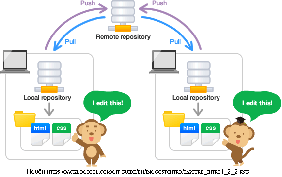
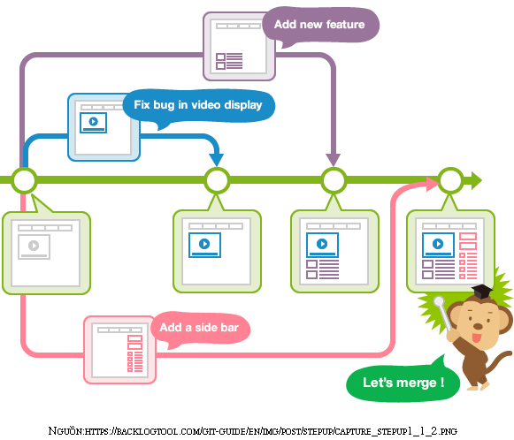
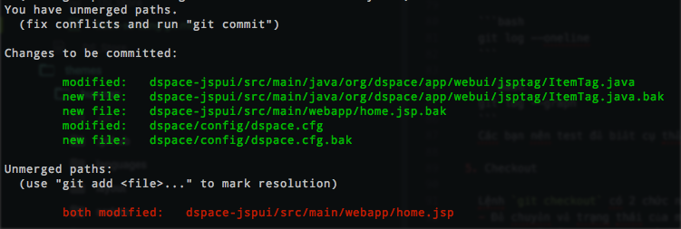
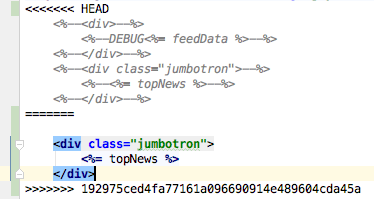

Git là gì ?
- Về nguồn gốc GIT là một hệ thống quản lý phiên bản phân tán, vốn được phát triển nhằm quản lý mã nguồn của Linux.
- Đối với lập trình viên thì GIT giống như một cổ máy thời gian vậy, có khi còn thần thánh hơn nữa á chứ.
Vậy tại sao phải dùng Git
Hãy tưởng tượng rằng khi chúng ta làm việc nhóm, cùng viết một chương trình gì đó. Team gồm có 5 người
mỗi người code một module rồi dùng usb copy lại sao :v, khá là vất vả.Đó là chưa kể đến việc nhiều người cũng chỉnh sửa 1 file rồi sau này tìm kiếm chỗ khác nhau mà ghép lại thì mờ mắt lun :))
Dùng hay không thì không ai bắt ép chúng ta cả, nói thật bây giờ bảo mình code một cái gì đó mà không được dùng Git thì chẵn khác nào bảo mình có người yêu mà không được gặp vậy :v ( mình vẫn còn FA).
Mình đưa ra vài ví dụ vậy thôi, đợi khi nào GIT trả mình tiền PR rồi mình viết thêm :3
Cách dùng Git cơ bản
Các từ khóa cơ bản trong Git
Repository: Nó là nơi chưa tất cả các thông tin của một project do git quản lý. Nói chung nó là một cái khó chưa code của mình :D. Viết tắt là repo.
Có hai loại repo là:
- Local: Là cái kho chưa trong máy của mình.
- Remote: Là cái kho ở trên server chuyên dụng cho Git có thể kể đến như github.com, gitlab.com.

Local là nơi mà mình sẽ làm việc ở trên máy, còn khi nào mình muốn chia sẽ công việc (code) của mình cho người khác thì mình “push” lên server. Hoặc ngược lại mình muốn lấy code của người khác thì mình “pull” từ server về.
Branch: Nhánh theo mình hiểu thì nó giống như một workspace hay giống như một ngữ cảnh. Vậy vai trò của nhánh là gì.
- Trong git có một nhánh chính có tên là “master”. Khi bạn muốn thử nghiệm một chức năng mới trên sản phẩm của mình bạn có thể tạo ra một nhánh khác ví dụ như “NewStyle” sau đó làm việc trên nhánh này mà không hề ảnh hướng đến nhánh master hay công việc của các thành viên khác trong nhóm. Sau khi thử nghiệm thành công bạn có thể merge lại vào nhánh master nếu muốn.

- Trong git có một nhánh chính có tên là “master”. Khi bạn muốn thử nghiệm một chức năng mới trên sản phẩm của mình bạn có thể tạo ra một nhánh khác ví dụ như “NewStyle” sau đó làm việc trên nhánh này mà không hề ảnh hướng đến nhánh master hay công việc của các thành viên khác trong nhóm. Sau khi thử nghiệm thành công bạn có thể merge lại vào nhánh master nếu muốn.
- Như trên hình thì chúng ta có 4 branch là:
- master ( màu xanh lá)
- Add new feature
- Fix bug in video display
- Add a slide bar
Merge: Đây là một công việc khi bạn hoàn thành một chức năng hay một thử nghiệm và muốn đưa nó vào sản phẩm của mình, hay bạn muốn đưa code của mình gộp lại cùng với các thành viên khác trong team.
Conflict: Xung đột thường xảy ra khi chúng ta tiến hành merge mà lúc đó có 1 file bị thay đổi bởi 2 nhánh khác nhau.
- Ví dụ: Nhánh A sửa file abc.txt và nhánh B cũng sủa file abc.txt, trong một số trường hợp đơn giản git có thể tiến hành auto merge chong chúng ta nhưng trong một số trường hợp phức tạp hơn thì git sẽ báo là conflict để chúng ta tự merge 2 nhánh lại với nhau.
Commit: Đây là một hành động mà chúng ta thao tác nhiều nhất khi dùng git. Hành động này lưu lại các trạng thái của các file đang được theo dõi. Nói nôm na nó như là chúng ta lưu lại game sau khi chơi qua phần vậy.
Các thao tác cơ bản khi dùng git
Init một local repo
1
git init
Thêm các file để git theo dõi
1
git add .
Cú pháp trên thêm tất cả các file tại node thử mục hiện tại (đây là cú pháp thường dùng), nếu như bạn muốn thêm một file nào đó ví dụ như file abc.txt thì làm như sau.
1
git add abc.txt
Commit
1
git commit -m "Some thing you want to commit"
Nếu như bạn không dùng tham số -m thì thì sau khi bạn gõ lên
git commitsẽ hiện ra một console giống như vim để bạn nhập vào messageLưu ý trước khi commit thì các bạn phải
git add .trước nhéXem lại log
1
git log
git log có các tham số thường dùng như
--onelinehay--graph1
git log --oneline
1
git log --graph
Các bạn nên test để biết cụ thể 2 lệnh trên làm gì nhé ;)
Checkout
Lệnh
git checkoutcó 2 chức năng chính là chuyển về trạng thái của một commit hoặc là chuyển sang một nhánh khácĐể chuyển về trạng thái của một commit trước đó ta làm như sau:
Xem mã băm của commit mà bạn muốn quay về
1
git log --oneline
Kết quả sẽ có dạng như sau
1
2b031e33 Add xyz.txt
772932c Add abc.txtBây giờ bạn muốn quay lại commit nào thì thực hiện lệnh như sau, ở đây mình muốn quay lại commit “Add abc.txt”
1
git checkout 772932c
Để kiểm tra các bạn xem lại log là thấy liền nhé :D. Cuộc đời mà đươc quản lý bằng git thì tốt biết mấy :v
À nếu các bạn muốn quay lại commit mới nhất thì cứ
checkoutlại branch khi nãy nhé, ở đây là master.Để tạo ra một brand mới
1
git checkout -b "NewBranch"
Merge 2 nhánh lại với nhau
Giả sử bạn muôn merge nhánh NewStyle vào nhánh master thì trước hết bạn phải ở nhánh master đã nhé
1
git merge NewStyle
Vậy chúng ta sẽ làm gì khi bị conflict:
- Sau khi thực hiện lệnh merge xong bạn sử dụng lệnh
get statusđể xem merge thành công hay bị conflict, nếu bị conflict thì sẽ có dạng như sau:

- Các file màu xanh là những file merge thành công, còn màu đỏ là file bị conflict.
- Mở file bị conflict ra các bạn sẽ thấy như sau:
 - Đoạn conflict được chia ra làm 2 phần bởi dấu =======, phần trên là của local repo (hay chính là đoạn code mà chúng ta đã thay đổi) và phần trên là của remote repo (hay là của người khác)
- Để fix bạn tiến hành xóa 1 trong 2 phần là xong ;)
- Fix xong thì bạn dùng lệnh
git add .để thêm file vừa fix xong rồi commit lại nhégit commit -m "Fix conflict"
- Sau khi thực hiện lệnh merge xong bạn sử dụng lệnh
Tiếp theo mình sẽ hướng dẫn việc sử dụng pull and push để lấy code về và đưa code lên remote repo
Pull là hành động lấy code từ trên remote repo về local repo
Để pull về code của nhánh master
1
git pull
Để pull về code của một branch cụ thể ta dùng lệnh sau
1
git pull origin NewStyle
Lưu ý:
originlà tên của remote repo cònNewStylelà tên của branch trên remote repoSau khi pull code về có thể xảy ra conflict, các bạn cứ fix như bình thường sau đó commit lại là ok.
Push là hành động đưa code từ local repo lên remote repo
Các bạn lưu ý là trước khi push code lên phải pull code về trước.
1
git push origin master
1
git push origin NewStyle